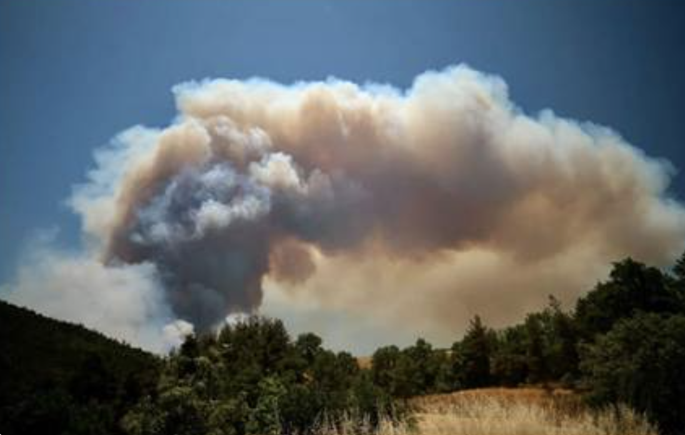

NERO
2023–2027european Network on Extreme fiRe behaviOr — COST Action CA22164
NERO brings together wildfire researchers and practitioners to advance understanding of extreme wildfire events, combining data, expertise and process-based analysis while bridging science and operational practice to strengthen anticipation and response.